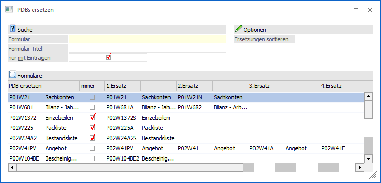
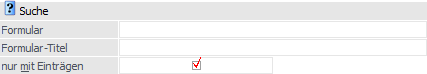
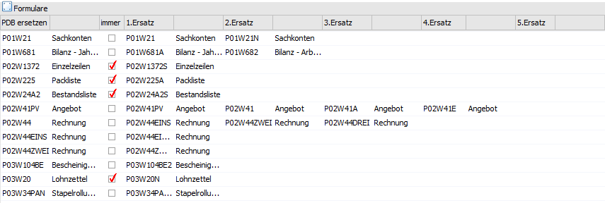
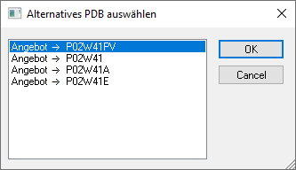
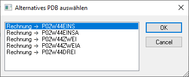
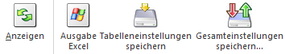
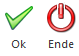

Im Menüpunkt
1 WinLine START
1 Parameter
1 Formulare ersetzen
können alternative Formulare für den Ausdruck hinterlegt werden. Beim Druck eines Formulars mit hinterlegten Ersatz-/ Alternativformularen kann aus einer Liste mit den hinterlegten Einträgen das gewünschte Formular für den Ausdruck ausgewählt werden. Pro Formular besteht die Möglichkeit bis zu fünf Alternativen zu hinterlegen. Voraussetzung für die Hinterlegung von alternativen Formularen ist, dass diese vorher angelegt und eingecheckt wurden.
Dieser Menüpunkt steht Administratoren sowie Benutzern mit dem Teiladministrationsrecht "Formularadministrator" zur Verfügung.

Suche

Ø Formular
Über das Eingabefeld "Formular" kann nach einer Formularbezeichnung (PDB-Datei) gesucht werden.
Hinweis
Als Platzhalter für die Suche nach einem Formularnamen kann das %-Zeichen verwendet werden.
Ø Formular-Titel
Über das Eingabefeld "Formular-Titel" kann nach einem Formulartitel gesucht werden.
Hinweis
Als Platzhalter für die Suche nach einem Formularnamen kann das %-Zeichen verwendet werden.
Ø Nur mit Einträgen
Wird die Checkbox "nur mit Einträgen" aktiviert, werden lediglich die Formulare in der Bildschirmtabelle angezeigt, die bereits Einträge mit Ersatzformularen besitzen. Über den Button "Anzeigen" wird die Bildschirmtabelle aktualisiert.
Optionen
Ø Ersetzungen sortieren
Wird diese Checkbox aktiviert, werden die alternativen Formulare im Auswahlfenster nach dem Namen sortiert angezeigt d. h. die angezeigte Reihenfolge ergibt sich aus der Sortierung des Formularnamens und nicht aus der Reihenfolge 1. Ersatz bis 5. Ersatz.
Hinweis
Die Einstellung "Ersetzungen sortieren" gilt für alle Benutzer und kann von einem Administrator oder einem Benutzer mit dem Teiladministrationsrecht "Formularadministrator" eingestellt werden.
Tabelle "Formulare"

Ø PDB ersetzen
Hier wird jeweils das Original-Formular + Titel angezeigt.
Ø immer
Durch das Aktivieren dieser Checkbox wird festgelegt, dass immer der 1. Ersatz verwendet werden soll. Beim Ausdruck selbst kann somit nicht mehr zwischen den möglichen Alternativformularen ausgewählt werden.
Ø 1. Ersatz - 5. Ersatz
In den Spalten 1. Ersatz bis 5. Ersatz können die entsprechenden Ersatz-/ Alternativformulare hinterlegt werden.
Beim Druck eines Formulars mit hinterlegten Alternativformularen werden die Ersatzformulare im Fenster zur Auswahl vorgeschlagen. Mit "Ok" wird das gewählte Formular verwendet. Bei "Cancel" wird der Ausdruck mit dem Standard-Formular vorgenommen.

Hinweis
Die Formularersetzungen können auch rekursiv definiert werden. Bei der Auswahl der "Alternativformulare" werden dann alle Ersatz-Formulare, bis zu max. drei Ebenen; angezeigt.
Beispiel
ü Beim Formular P02W44 sind die Ersatzformulare P02W44EINS, P02W44ZWEI und P02W44DREI hinterlegt
ü Beim Formular P02W44EINS ist das Ersatzformular P02W44EINSA hinterlegt
ü Beim Formular P02W44ZWEI ist das Ersatzformular P02W44ZWEIA hinterlegt
Wird nun das Formular P02W44 angesprochen, werden folgende Formulare zur Auswahl angeboten:

Tabellenbuttons

Ø Anzeigen
Über den Button "Anzeigen" werden die Formulare ggf. mit einer eingegebenen Namenseingrenzung in der Bildschirmtabelle dargestellt.
Ø Ausgabe Excel
Über den Button "Ausgabe Excel" kann der Inhalt der Bildschirmtabelle "Formulare" in eine Excel-Datei übergeben werden.
Ø Tabelleneinstellungen speichern
Die Spalten einer Tabelle können grundsätzlich an beliebige Positionen verschoben bzw. in der Breite entsprechend angepasst werden. Durch die Anwahl des Buttons "Tabelleneinstellungen speichern" werden die Einstellungen benutzerspezifisch gespeichert und beim nächsten Aufruf des Programmpunktes wieder entsprechend geladen.
Ø Gesamteinstellungen speichern
Im Gegensatz zu "Tabelleneinstellungen speichern" können mit "Gesamteinstellungen speichern" mehrere Tabellenaufbauten gespeichert und nach Wunsch geladen werden. Zusätzlich werden Sonderfunktionen der Tabelle (z. B. "Spalte gruppieren") ebenfalls bei der Speicherung bedacht.
Buttons

Ø Ok
Mit dem Button "Ok" bzw. der Taste F5 werden die Änderungen gespeichert.
Ø Ende
Mit dem Button "Ende" bzw. der Taste ESC wird das Fenster geschlossen und evtl. vorgenommene Einstellungen verworfen.